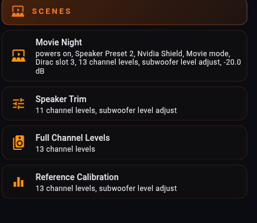
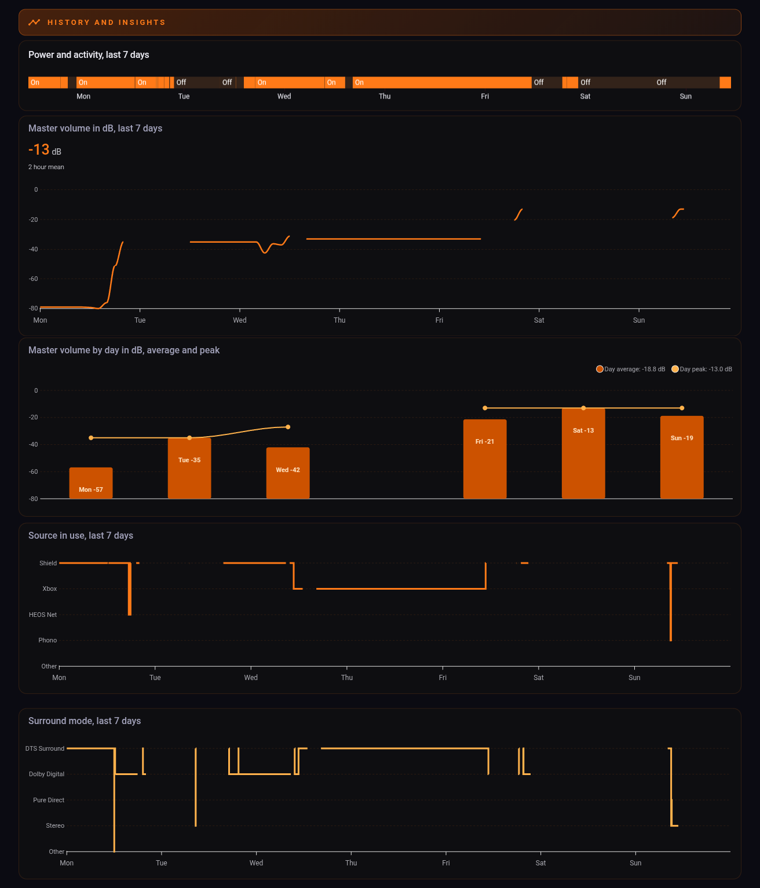

Ten steps, every card's YAML, and a complete view you can paste in one go. Built and photographed on a real Marantz CINEMA 30. Change two strings and it is yours.

Two things feed this dashboard, and the difference matters at every step below.
| Comes from | Gives you |
|---|---|
| AVR Maestro's synced scripts | Every control. Inputs, surround modes, Audyssey, Dirac, Smart Selects, presets, dimmer, eco, your Scenes. |
| The Denon AVR integration's media player entity | Live state. Power, selected source, surround mode, volume, mute. |
All four are in the default HACS store. In Home Assistant: HACS › Frontend › Explore & Download Repositories, search the name, Download, then reload your browser.
| Search for | Used for | If you skip it |
|---|---|---|
| Mushroom | Every control tile, and the volume slider | Use a plain button card. Works, looks squarer. |
| button-card | Section headers with a live label | Use a markdown card, or plain headings. |
| card-mod | The colours, and the lit state on the active tile | Everything still works. Nothing lights up. |
| apexcharts-card | The history graphs | Use the built-in history-graph card. |
Every snippet on this page uses two placeholders. Find yours once and the rest is copy and paste.
media_player.your_receiver → Settings › Devices & Services › your receiver › the media player entity. Something like media_player.marantz_cinema_30.script.avr_maestro_MAC_... → Developer Tools › States, and type avr_maestro in the entity filter. Your whole control list appears.The middle of every script ID is your receiver's MAC address, twelve lowercase characters, the same on all of them. Copy it once. Everywhere this page writes MAC, put yours.
unavailable. Older builds named scripts after the receiver's name rather than its MAC. If you synced back then, those older ones are still listed and are dead. The live ones are the MAC-named ones.From here on, every step is: add a section, then paste cards into it. To paste YAML, use the three-dot menu on a card and choose Edit in YAML, or the three-dot menu on the dashboard for Raw configuration editor to paste the whole thing at once.
# The view's own settings, if you prefer to type them
type: sections
title: AVR Maestro
icon: mdi:audio-video
max_columns: 3
dense_section_placement: true
Start with the simplest thing on the board, so you know your entity IDs are right before you build anything complicated. Add a section, add a card, Edit in YAML, paste:
type: button
name: Pure Direct
icon: mdi:speaker
tap_action:
action: perform-action
perform_action: script.turn_on
target:
entity_id: script.avr_maestro_MAC_mode_pure_direct
Stock Home Assistant. No HACS needed.
Tap it. If the receiver changes, your IDs are right and everything below will work. If nothing happens, go back to step 2.
This is the pattern worth learning, and every source and surround tile on the board is a copy of it. The card sends a script, and colours itself from the receiver entity, so the input you are actually on is lit and the others are not.

type: custom:mushroom-template-card
entity: script.avr_maestro_MAC_input_cd
icon: mdi:disc
primary: CD
icon_color: >-
{{ 'orange' if (state_attr('media_player.your_receiver','source') or '')|lower
== 'cd' else 'grey' }}
layout: vertical
fill_container: true
tap_action:
action: perform-action
perform_action: script.turn_on
target:
entity_id: script.avr_maestro_MAC_input_cd
card_mod:
style: |
ha-card {
border-radius: 14px;
{% if (state_attr('media_player.your_receiver','source') or '')|lower == 'cd' %}
background: linear-gradient(160deg, rgba(226,86,10,0.34), rgba(15,15,17,0.88));
border: 1px solid rgba(255,122,24,0.80);
{% else %}
background: rgba(15,15,17,0.72);
border: 1px solid rgba(255,122,24,0.14);
{% endif %}
}
Change three things per input: the script, the icon, and the string it compares against.
Two things to get right, or a tile will never light:
source_list and sound_mode_list attributes. Those are the exact strings. Compare lowercase, as above.Xbox, while the AVR Maestro control is still called input_game1. Match on what the receiver reports, not on the script name.Surround modes are the same card with sound_mode in place of source.
A plain title is dead space. Put the live value under it and "Sources" becomes "Sources / Now on Nvidia Shield".
type: custom:button-card
name: Sources
icon: mdi:video-input-hdmi
color_type: label-card
entity: media_player.your_receiver
show_label: true
label: >-
[[[ var v = states["media_player.your_receiver"].attributes.source;
return v ? ("Now on " + v) : "Receiver in standby"; ]]]
tap_action:
action: none
styles:
grid:
- grid-template-areas: '"i n" "i l"'
- grid-template-columns: min-content auto
name:
- font-size: 13px
- letter-spacing: 3px
- text-transform: uppercase
- justify-self: start
label:
- font-size: 11px
- justify-self: start
The two-line grid is what puts the label under the title instead of beside it.
Swap attributes.source for attributes.sound_mode on the Surround header, and so on.
Home Assistant reports volume as a fraction. Nobody sets a receiver to "0.67". One line of maths fixes it and the whole section starts reading like a receiver.

volume_level as master volume divided by 100, and on Denon and Marantz receivers MV 80 is the 0 dB reference. So dB = volume_level × 100 − 80. A volume_level of 0.67 is master volume 67, which is −13.0 dB.# The readout
type: custom:mushroom-template-card
entity: media_player.your_receiver
icon: mdi:volume-high
primary: >-
{% set v = state_attr('media_player.your_receiver','volume_level') %}
{% if v is not none %}{{ (v * 100 - 80) | round(1) }} dB{% else %}Standby{% endif %}
secondary: Master volume
layout: vertical
# The slider. media_controls must be empty or the bar becomes a power button
type: custom:mushroom-media-player-card
entity: media_player.your_receiver
volume_controls:
- volume_set
media_controls: []
show_volume_level: true
# A preset. 0.50 is master volume 50, which is -30 dB
type: custom:mushroom-template-card
entity: media_player.your_receiver
icon: mdi:weather-night
primary: Night
secondary: "-30 dB"
tap_action:
action: perform-action
perform_action: media_player.volume_set
target:
entity_id: media_player.your_receiver
data:
volume_level: 0.50
Read the name from the script instead of typing it, and renaming a Scene in AVR Maestro renames the tile with no dashboard edit.

type: custom:mushroom-template-card
entity: script.avr_maestro_MAC_scene_1234567890123
icon: mdi:theater
primary: >-
{{ state_attr('script.avr_maestro_MAC_scene_1234567890123','friendly_name')
| replace('AVR Maestro - ', '') | replace(' (Your Receiver)', '') }}
secondary: >-
{% set t = states.script['avr_maestro_MAC_scene_1234567890123'].attributes.last_triggered %}
{{ 'recalled ' ~ relative_time(t) ~ ' ago' if t else 'not run yet' }}
multiline_secondary: true
tap_action:
action: perform-action
perform_action: script.turn_on
target:
entity_id: script.avr_maestro_MAC_scene_1234567890123
The two replace() calls trim the prefix and the receiver name off the friendly name.
A second line is worth the extra minute. A wall of evocatively named buttons tells you nothing at 11pm; a line saying what each one restores tells you which to press.
The receiver's media player entity is recorded by Home Assistant like any other, so you get a listening history for free. Everything below comes from that one entity: no extra sensors, no helpers, nothing to configure first.

The plain state timeline needs no custom cards at all, and is the one most worth having:
type: history-graph
hours_to_show: 168
entities:
- entity: media_player.your_receiver
name: Receiver
On, off, and what it was doing, across a week.
Volume in dB uses the same conversion as step 7:
type: custom:apexcharts-card
graph_span: 7d
header:
show: true
title: Master volume, last 7 days
series:
- entity: media_player.your_receiver
attribute: volume_level
name: Master volume
type: line
curve: smooth
unit: dB
float_precision: 1
transform: "return x == null ? null : Number(x) * 100 - 80;"
extend_to: now
group_by:
duration: 1h
func: last
fill: last
apex_config:
chart:
height: 240
yaxis:
min: -60
max: 0
group_by with fill: last turns sparse events into a continuous line. The y-axis has to go in apex_config to take effect.
A daily average and peak turns a spiky line into something with a shape:
type: custom:apexcharts-card
graph_span: 7d
span:
end: day
header:
show: true
title: Master volume by day in dB, average and peak
series:
- entity: media_player.your_receiver
attribute: volume_level
name: Day average
type: column
float_precision: 1
transform: "return x == null ? null : Number(x) * 100;"
group_by: {duration: 1d, func: avg, fill: 'null'}
- entity: media_player.your_receiver
attribute: volume_level
name: Day peak
type: line
curve: smooth
float_precision: 1
transform: "return x == null ? null : Number(x) * 100;"
group_by: {duration: 1d, func: max, fill: 'null'}
apex_config:
yaxis:
min: 0
max: 80
labels:
formatter: "EVAL:function (v) { return (v - 80).toFixed(0); }"
tooltip:
y:
formatter: "EVAL:function (v) { return v == null ? '' : (v - 80).toFixed(1) + ' dB'; }"
Two series off the same attribute, grouped by day.
fill: 'null' means a day with no readings gets no bar rather than yesterday's carried forward.And the two that answer "what do I actually watch on, and in what": source and surround mode, plotted as a timeline of which one was selected.
type: custom:apexcharts-card
graph_span: 7d
span:
end: day
header:
show: true
title: Source in use, last 7 days
series:
- entity: media_player.your_receiver
attribute: source
name: Source
type: line
curve: stepline
stroke_width: 3
extend_to: now
float_precision: 0
transform: |
if (x == null) return null;
var m = ["Phono", "NET", "Xbox", "Nvidia Shield"];
var i = m.indexOf(x);
return i < 0 ? 0 : i + 1;
apex_config:
yaxis:
min: 0
max: 4
tickAmount: 4
labels:
formatter: >-
EVAL:function (v) { return ["Other", "Phono", "HEOS Net", "Xbox",
"Shield"][Math.round(v)] || ''; }
tooltip:
y:
formatter: >-
EVAL:function (v) { return v == null ? 'off' : ["Other", "Phono",
"HEOS Net", "Xbox", "Shield"][Math.round(v)] || 'Other'; }
Put your own sources in the transform array and in both formatter arrays. Keep index 0 as "Other".
A chart axis needs numbers, so the transform maps each source name to a position and the formatters map it back for the labels and the tooltip. Make the mapping total: null (receiver off) stays a gap, and anything not in your list falls to "Other", so the two can never be confused. Same card again with sound_mode gives you surround mode, with the strings in upper case exactly as your receiver reports them.
stepline on those last two. A source or a surround mode is a category, not a number. Smooth the curve and the line swoops between Shield and Xbox through whatever sits between them on the axis, drawing an input that was never selected. Volume is a real quantity and smooths honestly; a category does not.state_class: measurement template sensor, which Home Assistant keeps as long-term statistics for years.The complete view, every section and every card, with placeholders instead of entity IDs.
YOUR_RECEIVER with your media player entity's name, and YOURMAC with your receiver's twelve characters from step 2.Before assuming you built it wrong: some of them cannot light up, and it is worth knowing which.
A tile can only show its state if Home Assistant can read it. Home Assistant reads your receiver through the Denon AVR integration, and that publishes a specific list.
| Home Assistant can see | Home Assistant cannot see |
|---|---|
| Power | Audyssey MultEQ curve |
| Selected source | Dynamic Volume setting |
| Surround mode | Which Dirac slot is loaded |
| Volume and mute | Front panel dimmer level |
| Dynamic EQ, sometimes | Eco mode, speaker preset, virtualizer |
Everything in the right-hand column is readable from the receiver - it answers when asked, over the same protocol AVR Maestro uses to draw its own screens. It just is not published to Home Assistant, so a dashboard has nowhere to read it from. Those buttons work perfectly; they cannot show you which one is active.
Measured on the receiver this was built on: twenty of sixty controls can show their state, and forty cannot. Publishing the other forty is on the roadmap, and it is the difference between a wall of buttons and a control surface.
true, false, or not at all. Treating "not at all" as "off" puts a confident wrong answer on your wall.icon_color: >-
{% set d = state_attr('media_player.your_receiver','dynamic_eq') %}
{{ 'orange' if d is true else 'grey' }}
secondary: >-
{% set d = state_attr('media_player.your_receiver','dynamic_eq') %}
{% if d is none %}state not published{% elif d %}on{% else %}off{% endif %}
Three states, not two.
grid_options: {columns: 9}. For six across, 6.media_controls with on_off in it. Set media_controls: [].multiline_secondary: true.experimental.color_threshold. It draws the stroke as a vertical gradient, and a perfectly horizontal segment has zero height to gradient across, so it renders invisible. A 43-hour session at one volume vanished entirely. Use a solid color.
Home Automation is the one paid unlock in AVR Maestro. Everything else, including the on-device AI assistant, is included.